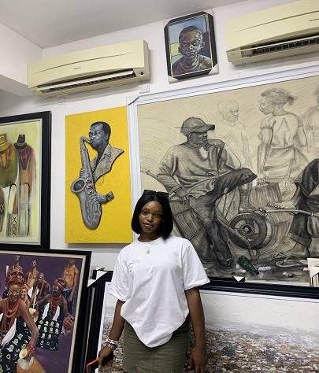

Busari Olamide

Summary
Highly organized with excellent communication skills and a good work ethic. Demonstrated abilities to listen, understand and guide patients.
Education
- Bachelor of Science in Biochemistry- Caleb University, Lagos(2019-2023)
Work Experience
Medical Laboratory Assistant Intern- Jooly Diagnostic Medical Services
(05/2022-10/2022)
- Regularly cleaned and disinfected working areas taking extra precautions.
- Sterilized equipments and performed routine checks to adhere to health and safe and cleanliness regulations.
- Performed phlebotomy.
- Venipuncture process and analysis, separation of blood and plasma, white and red blood cell count, blood typing.
Skills
- Communication
- Teamwork
- Efficiency
Awards and Certifications
- Best in Further Maths- Barachel Model College (July, 2019)
- Adobe Certified Professional (June, 2023)
Other